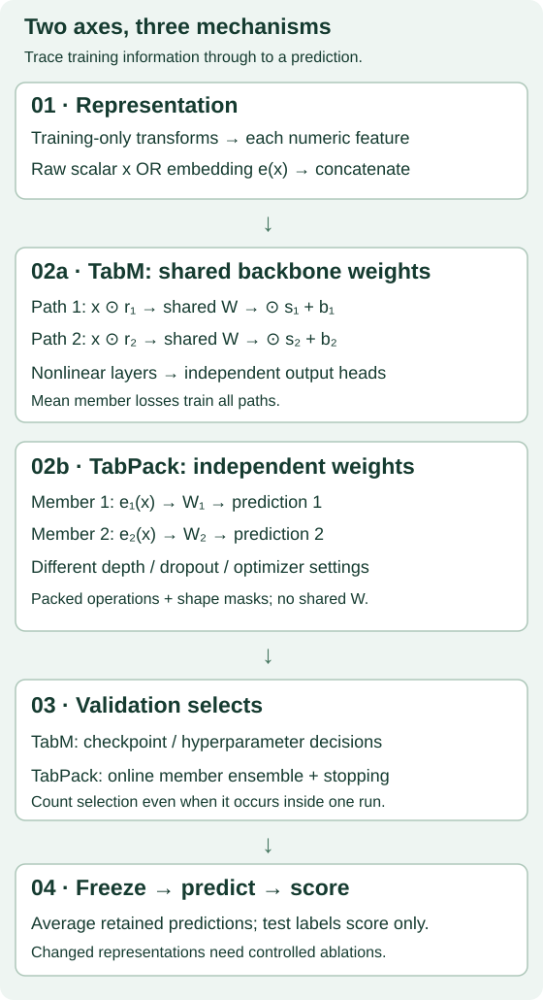

Numerical embeddings and ensembles¶
B02 · Year 5 → 6 bridge · 25-minute core + reproduction lab
Your win: distinguish a better input representation from a better ensemble, then design a comparison that could tell them apart.
B01 showed why a score compares an entire pipeline. Its unresolved question: once the input table is matched, which part of the predictor deserves credit? Here we separate two choices: how a scalar enters a neural network, and how several predictions are trained and combined. A strong relational result must eventually beat credible flat-table baselines, not an unnecessarily weak MLP.
Recall before reading: What is a validation set allowed to choose? Why does matching train/test rows fail to match selection effort? Write one sentence for each. Prerequisites: RealMLP, L053, TabM, L054, and an affine layer x @ W + b. You need only shapes, averages and squared error for the core lesson.
See the idea · then trace the details
Numerical embeddings and shared ensembles: locate the ensemble mechanism
Trace the member-specific paths through one shared weight matrix.
1One row, several members
The same row enters k member paths
Each ensemble member sees the row. Member-specific scaling lets the paths behave differently without storing k independent large matrices.
2Share W, vary the scales
Member i: ((x ⊙ rᵢ) W) ⊙ sᵢ
The small r and s vectors belong to members; the large W is shared. Repeat the configured ensemble layers through the backbone.
3Train separately, combine
Member losses during fitting; average at inference
Each member receives a learning signal. Combine the member predictions at evaluation; averaging before the training loss is a different objective.
Pause and predict: If all member-specific parameters and stochastic choices were identical, what would averaging buy?
The members could make identical predictions. Parameter sharing alone does not guarantee useful diversity.
Answer: The members could make identical predictions. Parameter sharing alone does not guarantee useful diversity.
1. Give a scalar useful coordinates¶
An ordinary MLP receives a numerical feature as one number. An embedding maps that number into several coordinates before mixing different features. The extra coordinates can make useful nonlinear patterns easier for subsequent layers to express; they do not create new observations or guarantee better generalization. Numerical embeddings paper, §§3–4.
For one feature with training-fitted knots [0, 2, 4], piecewise-linear encoding gives x=1 → [0.5, 0] and x=3 → [1, 0.5]. The first coordinate fills the first interval, then the second fills the next. This version extrapolates at the ends: −1 → [−0.5, 0], 5 → [1, 1.5]. Fit knots on training features only. Distinct knots are required; ties need an explicit preprocessing policy. Our exercise rejects duplicate edges instead of silently inventing widths.
Periodic embeddings instead expose learned oscillations. The pinned TabPack source computes α ⊙ concat(x, cos(2π(wx+b))) + β per feature. It starts the affine scale and shift at zero, so the initial embedding is zero; the affine parameters can receive gradients first. The implementation includes 2π and truncated-normal initialization; the paper's compact equation omits that explicit factor. We preserve the code formula for reproduction. These embeddings are not interchangeable with the earlier paper's piecewise-linear or PLR recipes. TabPack Appendix B · Pinned implementation.


2. Follow the weights, not the word “ensemble”¶
TabM: several prediction paths share large weight matrices. For one affine layer in row-vector notation, member k computes ((x ⊙ r_k) W) ⊙ s_k + b_k. Its elementwise adapters differ, while W is shared. Train with the mean of member losses, not the loss of the averaged prediction. At inference, average regression predictions or classification probabilities. The full architecture includes nonlinearities, initialization rules and separate output heads. The layer exercise is deliberately only one load-bearing operator. TabM §3.
A tiny trace: x=[1,2], W=[[2,−1],[0.5,3]]. With adapters all ones and zero bias, the output is [3,5]. With r=[−1,2], s=[2,−1], it is [0,−13]. The same matrix can support different member predictions. A rank-one adapter mask does not make the effective matrix rank one.
TabPack: pack many independently parameterized MLPs into batched operations. Members may differ in depth, dropout, embedding size and optimizer settings; padding and masks make heterogeneous shapes computable together. Each member owns its weights. Its packed optimizer preserves member-specific state and hyperparameters. The online ensemble is selected using validation predictions as training proceeds. Efficiency comes from executing the pack together, not from sharing TabM's backbone matrix. TabPack §3, Figure 2.
The official operator audit checks heterogeneous packed affine outputs and gradients against explicit loops, zero cross-member weight gradients, and cosine embedding arithmetic. It validates those operators, not full training-trajectory identity. Read the audit receipt.
3. Selection is work, even inside one run¶
Suppose validation labels are [1,1]. Member A predicts [0,2], B predicts [2,0], C predicts [5,5]. A and B each have MSE 1; their average has MSE 0. A greedy selector chooses A on the first tie, adds B, then stops because no candidate improves the average.
Now use the exercise to change the selection labels. The deliberately contaminated option makes C win. It demonstrates how test-guided selection changes the deployed predictor; it is not an authorized evaluation recipe.
Our fixed-pool exercise allows repeated indices, chooses the first exact tie and stops on strict non-improvement. TabPack's full online procedure additionally tracks training states, member stopping, ensemble history and reuse of the current ensemble. The upstream implementation, not this small exercise, runs the reproduction. Internal validation choices count as selection even when there is no outer hyperparameter search. TabPack §§3.5–3.6 and Appendix C.
Predict before revealing: Does averaging guarantee a better predictor than a separately trained MLP?
Check your reasoning
No. Convexity says the loss of an average is no worse than the average loss of those same members for squared error. It does not compare against a separately optimized baseline, guarantee better classification error, or remove selection bias.4. Build the experiment that answers your question¶
A four-cell design isolates embedding on/off and ensembling on/off. Hold dataset, preprocessing, optimizer family, training/stopping policy and candidate budget fixed. For a TabM-family experiment, define the single-path control and verify its initialization; merely replacing a name does not guarantee a matched control.
| Cell | Embedding | Member paths | What the paired contrast asks |
|---|---|---|---|
| A | Off | One | Reference MLP |
| B | On | One | B − A: embedding effect for one path |
| C | Off | Many | C − A: ensemble effect without embedding |
| D | On | Many | D − C: embedding effect with ensemble |
For RMSE, improvement is a negative difference. The interaction is (D − C) − (B − A). Report paired seed contrasts on the same rows. Match selection opportunity and separately report actual fit/inference cost; equal candidate counts do not make resource consumption equal. State whether widths, parameters or compute are controlled, because adding embeddings changes input dimension. Do not assert all three are simultaneously matched.
Add a tuned tree and a RealMLP baseline on the same split, with declared preprocessing and equal outer-search allowances. Keep their purpose clear: they test whether the resulting neural pipeline is useful, while the four cells test the mechanism. TabPack with and without embeddings is not a clean embedding-only ablation: the published depth ranges also differ. The selected experiment below does not execute this factorial design or those baselines. TabPack Appendix F.
Your task: specify six candidate recipes per arm, three paired seeds, a validation-only stopping rule and a maximum total cost. Count all fits, internal selection decisions, failed runs and final evaluations. This is a planning exercise, not permission to launch it. Give two falsification tests: one that would expose leakage and one that would disprove your claimed source of improvement.
5. Read the reproduction honestly¶
COMPLETE_SELECTED_RELEASE_PROTOCOL · five evaluation seeds after a fresh 64-member search.
| Evaluation seed | Independently scored test RMSE |
|---|---|
| 0 | 0.41779797 |
| 1 | 0.41679763 |
| 2 | 0.41797847 |
| 3 | 0.41725860 |
| 4 | 0.41632376 |
Mean 0.41723129, sample SD 0.00068772. Released five-seed mean 0.41757790. Independent scoring reconciles all 44,586 validation/test predictions (search plus five evaluations), with maximum report difference 1.9e-08. Seeds share one split, so this is conditional training variability, not cross-dataset uncertainty.
Evidence-saving deviation: upstream writes an ensemble name instead of prediction arrays. The first unmodified run is retained. A complete rerun uses a read-only observer of the original final in-memory member predictions; model/selection code stays unchanged. All reruns count toward the budget.
The named lane is B02-TABPACK-CALIFORNIA, the complete selected release protocol. It includes the original 64-member search, its validation-selected member configurations, and all five evaluation seeds. All 13,209 training, 3,303 validation and 4,128 test rows are retained; source and array hashes pin positional row identity. The source controls noisy-quantile preprocessing, target normalization, Muon/AdamW, bfloat16, member patience 16 and ensemble patience 32. The fresh search determines its own selected configurations; copying the released 12-member list would omit selection cost.
The paper's Table 14 caption says ten seeds, but the pinned generator, evaluation config and report use five (0…4). We retain that mismatch. Fresh release-protocol completion is not whole-paper reproduction. The full benchmark, original numerical-embedding benchmark, fresh TabM benchmark and tuned tree/RealMLP comparisons are NOT_RUN. A close scalar score cannot establish historical environment identity or the causal effect of embeddings.
Full protocol and commands · Evidence report · Student notebook · Executed solution · Notebook HTML.
6. Earn the distinction¶
In the notebook, implement three live functions: piecewise-linear encoding, member-wise affine computation and validation-only greedy selection. Your functions feed behavioral checks and the worked selection result. Then independently replay every retained fresh prediction. Reading a solution or passing author checks does not complete your defense.
Exit: explain in 200–300 words why TabM sharing, TabPack packing and numerical embeddings are three separate choices. Include the source-code versus paper discrepancies, one fair factorial comparison, baseline rationale, two falsification tests and one finding that would change your mind. Status stays PENDING_WRITTEN_DEFENSE until reviewed.
Revisit after 1, 7 and 30 days: draw the weight-sharing distinction from memory; derive the four-cell interaction; audit a new comparison. Next, B03 in the bridge plan asks how a pretrained predictor changes the adaptation budget.
Primary reading: TabPack Figure 2 and §§3.3–3.6, then compare TabM §3 and the numerical embeddings paper §3. Use the field guide for retrieval. Ask the agent about any unclear shape, gradient, selection rule or evidence boundary.